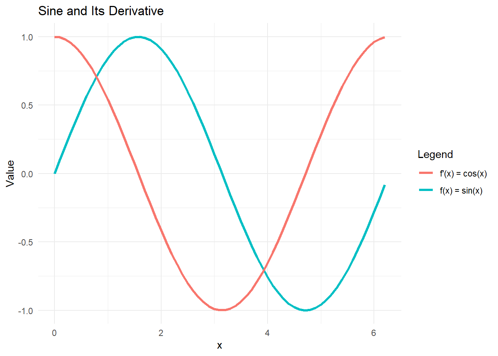
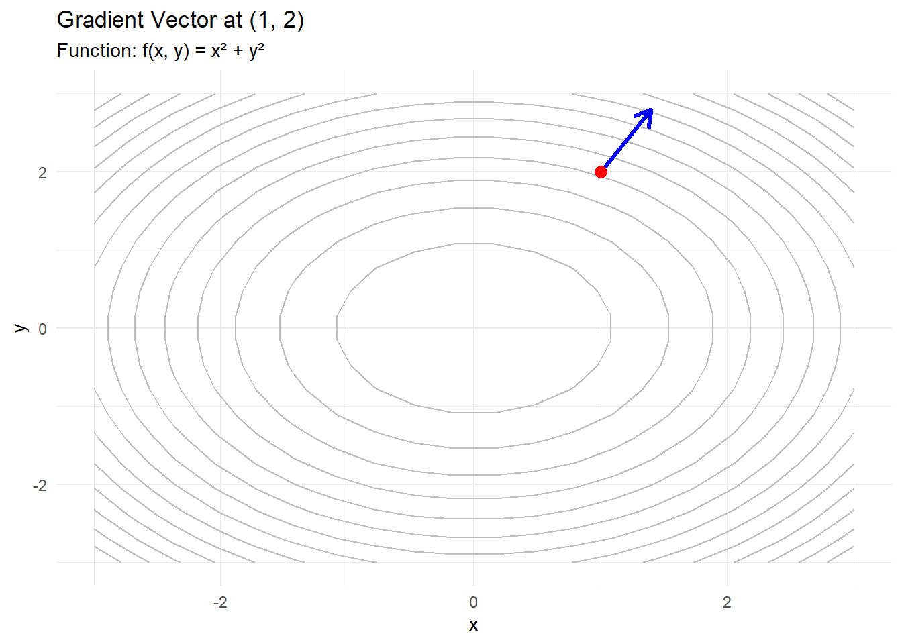

A derivative represents the rate of change of a function with respect to a variable.
It is the slope of the tangent line at any point on a function.
In simple terms: [ = ] Where \(\Delta\) = rate of change
Why Do We Use Derivatives?
We use derivatives to:
Understand how a quantity changes.
Find maximum and minimum values.
Model speed, growth, decay, and more.
Examples:
How fast is revenue increasing?
When is profit at its maximum?
A Simple Function and Its Slope
Let’s start with: \[
f(x) = x^2
\]
We can plot it in R and look at the slope at a few points.
library(tidyverse)# Define the function and its derivativef <-function(x) x^2df <-data.frame(x =seq(-5, 5, by =0.1))df$fx <-f(df$x) #applying function x^2# Key pointskey_points <-data.frame(x =c(-2, 0, 2), fx =f(c(-2, 0, 2)))# Plot using ggplot2ggplot(df, aes(x = x, y = fx)) +geom_line(color ="blue") +geom_vline(xintercept =c(-2, 0, 2), linetype ="dashed", color ="gray") +geom_point(data = key_points, aes(x = x, y = fx), color ="red") +labs(y ="f(x)", title ="Plot of f(x) = x^2") +theme_minimal()
Calculating the Derivative
The exact derivative of \(f(x) = x^2\) is \(f'(x) = 2x\)
The function ( f(x) = x^2 ) is a simple power function where the exponent is 2.
To find its derivative, we apply the power rule from calculus, which states that if ( f(x) = x^n ), then the derivative is ( f’(x) = n x^{n-1} ).
In this case, ( n = 2 ), so taking the derivative gives ( f’(x) = 2 x^{2-1} = 2x ).
This derivative represents the slope of the tangent line to the curve at any point ( x ), and it tells us how quickly the value of ( f(x) ) is changing at that point.
Using R to Calculate the Derivative
R can compute symbolic derivatives using expression() and D():
expr <-expression(x^2)D(expr, "x")
2 * x
The function D(expr, “x”) then tells R to take the derivative of this expression with respect to ( x ). The output is 2 * x, which is the correct symbolic derivative of ( x^2 ) using basic calculus rules.
The Slope as a Limit
The derivative at a point represents the slope of the tangent line to the function at that point. This slope is found by calculating the limit of the average rate of change over a small interval.
Specifically, for a function ( f(x) ), the derivative at ( x ) is defined as:
This expression calculates the slope of the secant line between the points ( x ) and ( x + h ), and as ( h ) approaches zero, the secant line becomes the tangent line. Therefore, the derivative gives the instantaneous rate of change of the function at the point ( x ).
From our earlier formula we stated that [ = ]
Here:
[ h x ] [ f(x + h) - f(x) y ] And therefore, [ = ]
This expression computes the average rate of change of the function over a small interval of length ( h ). As ( h ), this formula becomes the definition of the derivative, giving the instantaneous rate of change of the function at the point ( x ).
Let’s approximate the slope of \(f(x) = x^2\) at \(x = 2\) using a small value of \(h\):
x <-2h <-0.0001slope_approx <- (f(x + h) -f(x)) / hslope_approx # Should be close to 4
[1] 4.0001
Visualizing with Secant Line
Why \(h\) matters: This graph shows how we estimate the derivative when we don’t yet know the exact derivative. It’s the foundation of the concept of differentiation.
As we shrink \(h\), the secant line (which connects two points) approaches the tangent line (which touches at just one point).
As we went up one unit in x, we went up four units in f(x) (i.e., the slope is 4 as measured earlier mathematically).
# Choose x and hx0 <-1h <-1x1 <- x0 + h# Points on the curvey0 <-f(x0)y1 <-f(x1)# Secant slopeslope_secant <- (y1 - y0) / (x1 - x0)# Define secant line functionsecant_line <-function(x) slope_secant * (x - x0) + y0# Add secant line to dfdf$secant <-secant_line(df$x)# Highlighted pointspoints_df <-data.frame(x =c(x0, x1), y =c(y0, y1))# Plotggplot(df, aes(x = x)) +geom_line(aes(y = fx), color ="blue", size =1.2) +geom_line(aes(y = secant), color ="green", linetype ="dashed") +geom_point(data = points_df, aes(x = x, y = y), color ="red") +geom_text(data = points_df, aes(x = x, y = y +0.5, label =paste0("(", round(x,1), ", ", round(y,1), ")"))) +labs(title ="Slope as a Limit: Secant Approximates Tangent",subtitle ="f(x) = x²; Secant line between x = 1 and x = 2",y ="f(x)", x ="x") +theme_minimal()
Visualizing with Known Derivative Function
Let’s visualize \(f(x) = x^2\) and its derivative \(f'(x) = 2x\) across a range of values.
This tells us that for every value of \(x\), we see the value of the slope of the tangent line at that point.
Because the derivative has already been calculated exactly (analytically) using calculus. For example, for \(f(x) = x^2\), we know \(f'(x) = 2x\), and we just graph both.
It’s a global look at the whole slope behavior, with no approximation.
f_prime <-function(x) 2* x# Adding to df datasetdf$fpx <-f_prime(df$x) #applying function 2*x#Plotggplot(df, aes(x = x)) +geom_line(aes(y = fx, color ="f(x) = x^2")) +geom_line(aes(y = fpx, color ="f'(x) = 2x")) +labs(title ="Function and Its Derivative",y ="Value", color ="Legend") +theme_minimal()
Tangent Line
The tangent line shows the instantaneous rate of change — a more abstract idea, because it involves a limit as the two points get infinitely close. It’s the foundation of derivatives and allows us to talk about velocity at a specific instant, marginal cost, and more.
We are essentially shrinking the secant line as the second point moves closer to the first.
\(f(x)=x^2\) at \(x=1\)
# Point of tangencyx0 <-1y0 <-f(x0)slope <-f_prime(x0)# Tangent line functiontangent_line <-function(x) slope * (x - x0) + y0# Add Tangent_line vector to datasetdf$tangent <-tangent_line(df$x)# Plotggplot(df, aes(x = x)) +geom_line(aes(y = fx, color ="f(x) = x^2")) +geom_line(aes(y = tangent, color ="Tangent at x = 1"), linetype ="dashed") +geom_point(aes(x = x0, y = y0), color ="red", size =3) +labs(title ="Tangent Line at x = 1",y ="Value", color ="Legend") +theme_minimal()
Sine and Its Derivative
We explore the function ( f(x) = (x) ) and its derivative ( f’(x) = (x) ). The derivative of a function tells us the slope of the tangent line at any point. For trigonometric functions like sine, the derivative reveals how the rate of change behaves across the domain.
[ (x) = (x) ]
We’ll visualize both ( (x) ) and ( (x) ) to see how the function and its rate of change are related.
Derivative of a Trigonometric Function
\(f(x) = \sin(x) \Rightarrow f'(x) = \cos(x)\)
# Create datadf_trig <-data.frame(x =seq(0, 2* pi, by =0.1))df_trig$fx <-sin(df_trig$x)df_trig$fpx <-cos(df_trig$x)# Plot sin(x) and cos(x)ggplot(df_trig, aes(x = x)) +geom_line(aes(y = fx, color ="f(x) = sin(x)"), size =1.2) +geom_line(aes(y = fpx, color ="f'(x) = cos(x)"), size =1.2) +labs(title ="Sine and Its Derivative",y ="Value", color ="Legend") +theme_minimal()

Interpreting the Derivative
Observe that the peaks and valleys of ( (x) ) occur where the slope (i.e., derivative) is zero — which is exactly where ( (x) ) crosses the x-axis.
When ( (x) ) is increasing, ( (x) ) is positive.
When ( (x) ) is decreasing, ( (x) ) is negative.
The maximum and minimum of ( (x) ) align with zeros of ( (x) ), reinforcing that a derivative is zero at extrema.
This visually confirms that: [ (x) = (x) ]
Common Functions and Their Derivatives
Trigonometric and Inverse Trigonometric Derivatives
Assume ( x ) is in radians.
Derivative Rules
\[
\begin{array}{|l|l|l|}
\hline
\textbf{Rule} & \textbf{Function} & \textbf{Derivative} \\
\hline
\text{Multiplication by Constant} & c f & c f' \\
\text{Power Rule} & x^n & n x^{n-1} \\
\text{Sum Rule} & f + g & f' + g' \\
\text{Difference Rule} & f - g & f' - g' \\
\text{Product Rule} & fg & f g' + f' g \\
\text{Quotient Rule} & \frac{f}{g} & \frac{f' g - g' f}{g^2} \\
\text{Reciprocal Rule} & \frac{1}{f} & -\frac{f'}{f^2} \\
\hline
\end{array}
\]
Chain Rule Variants
From Slopes to Gradients
In one variable, the slope of a function tells us how steeply the function increases or decreases: [ = ]
For example, if ( f(x) = x^2 ), the slope at any point is: [ f’(x) = 2x ]
This slope tells us the direction and steepness of the curve at a specific point.
What Is a Gradient?
In multiple dimensions, we generalize the idea of slope to the gradient.
The gradient is a vector of partial derivatives:
[ f(x, y) = ]
It points in the direction of steepest ascent of a function.
The gradient gives us the rate of change in each direction.
Visualizing Gradient with a 3D Surface
Let’s take a simple surface:
[ f(x, y) = x^2 + y^2 ]
The gradient is:
[ f(x, y) = [2x, 2y] ]
It always points away from the origin, where the minimum is.
This is important because many optimization methods (like gradient descent) use the gradient to navigate the surface.
library(ggplot2)library(dplyr)df <-expand.grid(x =seq(-2, 2, length.out =20),y =seq(-2, 2, length.out =20)) %>%mutate(z = x^2+ y^2,dx =2* x,dy =2* y)ggplot(df, aes(x, y)) +geom_contour(aes(z = z), bins =15, color ="gray") +geom_segment(aes(xend = x + dx *0.1, yend = y + dy *0.1), arrow =arrow(length =unit(0.1, "inches")), color ="blue") +labs(title ="Gradient Vectors on f(x, y) = x² + y²",x ="x", y ="y") +theme_minimal()
Gradients are used to — to find minimum cost, maximum profit, or best-fit models.
In machine learning, we use an algorithm called gradient descent:
Move in the opposite direction of the gradient to reduce error.
Repeat until the algorithm converges on a minimum.
[ {} = {} - f() ]
\(\alpha\) is the learning rate, and ( f() ) is the gradient.
This powers tools like , , and neural networks.
Gradient Example
( f(x, y) = x^2 + y^2 )
We are given the function:
[ f(x, y) = x^2 + y^2 ]
Step 1: Compute Partial Derivatives
[ = 2x, = 2y ]
At the point ( (1, 2) ):
[ f(1, 2) = = [2, 4] ]
The gradient vector at this point is:
[ f(1, 2) = [2, 4] ]
# Create a grid of x and y valuesdf <-expand.grid(x =seq(-3, 3, length.out =20),y =seq(-3, 3, length.out =20))# Define the function and gradientsdf$z <-with(df, x^2+ y^2)df$dx <-with(df, 2* x)df$dy <-with(df, 2* y)# Highlight point (1, 2)point <-data.frame(x =1, y =2, dx =2, dy =4)# Plotggplot(df, aes(x, y)) +geom_contour(aes(z = z), bins =15, color ="gray") +geom_segment(data = point, aes(xend = x + dx *0.2, yend = y + dy *0.2),arrow =arrow(length =unit(0.15, "inches")),color ="blue", size =1.2) +geom_point(data = point, aes(x = x, y = y), color ="red", size =3) +labs(title ="Gradient Vector at (1, 2)",subtitle ="Function: f(x, y) = x² + y²",x ="x", y ="y") +theme_minimal()

3d plot
library(ggplot2)library(dplyr)library(plotly)# # Generate grid# grid <- expand.grid(x = seq(-3, 3, length.out = 30),# y = seq(-3, 3, length.out = 30)) %>%# mutate(z = x^2 + y^2,# dx = 2 * x,# dy = 2 * y)# # # Highlight point (1, 2)# pt <- data.frame(x = 1, y = 2, dx = 2, dy = 4)# # # Create 3D surface using plotly# x <- seq(-3, 3, length.out = 50)# y <- seq(-3, 3, length.out = 50)# z <- outer(x, y, function(x, y) x^2 + y^2)# # plot_ly(x = ~x, y = ~y, z = ~z) %>%# add_surface(colorscale = "Viridis") %>%# layout(title = "3D Surface of f(x, y) = x^2 and y^2",# scene = list(xaxis = list(title = "x"),# yaxis = list(title = "y"),# zaxis = list(title = "f(x, y)")))
# Define the function as a symbolic expressionf <-expression(x^2+ y^2)# Partial derivative with respect to xD(f, "x")
2 * x
# Output: 2 * x# Partial derivative with respect to yD(f, "y")
2 * y
# Output: 2 * y
probl
# P(X < 78)pnorm(78, mean =80, sd =6)
[1] 0.3694413
#There is approximately a 36.9% chance that a single student scores below 78.#P(Xbar < 78) given 4 repititions#Suppose a school selects a random sample of 4 students and computes their average score on the same exam. #What is the probability that the average score of the 4 students is less than 78?pnorm(78, mean =80, sd =6/sqrt(4))
[1] 0.2524925
#There is approximately a 25.2% chance that the average score of 4 students is below 78.
transpose a matrix
A <-matrix(1:6, 3, 2, byrow=T); A
[,1] [,2]
[1,] 1 2
[2,] 3 4
[3,] 5 6
t(A)
[,1] [,2] [,3]
[1,] 1 3 5
[2,] 2 4 6
Vectors
In linear algebra, a vector is a quantity that has both magnitude and direction. More formally:
A vector is an ordered list of numbers, which can represent a point in space or a direction from the origin. Vectors are often written as a column (or row) of numbers and belong to a vector space.
Vectors can represent data points, directions, velocities, or coefficients in systems of equations, and they are subject to operations like addition, scalar multiplication, and dot or cross products.
Why Vectors Matter in Analytics
Vectors form the foundation of:
Linear models
Gradient-based optimization
PCA and dimensionality reduction
In business analytics:
Vectors describe customer profiles, asset returns, feature weights, etc.
Understanding vectors helps in understanding directional change and relationships
Vector as a Directed Segment
Let A and B be two points. A directed line segment from A to B is denoted by:
\[\overrightarrow{AB}\]
This directed line segment constitutes a vector. If you can move the line segment to another line segment with the same direction and length, they constitute the same vector.
Notation emphasizes direction, not just location
Components of a Vector
Vectors can be expressed as ordered pairs/triples:
For example, the vector \[\mathbf{v} = \begin{bmatrix} 2 \\ -1 \\ 3 \end{bmatrix}\]
is a 3-dimensional vector, \(\mathbb{R}^3\) where each entry is a component along one of the coordinate axes.
Position vs. Direction
Important distinction:
A point: \(B=(2,3)\)
A vector: \(\overrightarrow{AB}\)
Shows direction and displacement
Many vectors can have the same direction and magnitude but start from different locations
Length of Vector
The length of a vector \(\vec{v}\) is denoted by \(\|\vec{v}\|\), or in shorthand by \(|\vec{v}|\). \[\begin{equation}
\|\vec{v}\|
\tag{2.3}
\end{equation}\]
The length of a vector is a scalar, which just means that it is a regular number, such as \(5\) or \(3.2\). The term scalar is used to emphasize that it is just a number and not a vector or a point.
Note that the order of the points is important. That is, if you change the order of \(A\) and \(B\), another vector, \(\vec{BA}\), is obtained. It has the opposite direction, but the same length, i.e., \[
\|\vec{AB}\| = \|\vec{BA}\|.
\]
Even \(\vec{AA}\) is a vector, which is called the zero vector, as shown in the definition below.
Vector Addition
Vector addition combines two vectors to form a third vector.
If \[
\vec{u} = \begin{bmatrix} u_1 \\ u_2 \end{bmatrix}, \quad \vec{v} = \begin{bmatrix} v_1 \\ v_2 \end{bmatrix}
\] then their sum is: \[
\vec{u} + \vec{v} = \begin{bmatrix} u_1 + v_1 \\ u_2 + v_2 \end{bmatrix}
\]
Addition is component-wise: each element is added separately.
Think of it as moving in one direction, then continuing in another.
Visualizing Vector Addition
Graphically, vectors are added using the tip-to-tail method:
Place the tail of \(\vec{v}\) at the tip of \(\vec{u}\)
The resulting vector \(\vec{u} + \vec{v}\) goes from the tail of \(\vec{u}\) to the tip of \(\vec{v}\)
Eigenvalues arise from solving: \[
A\vec{v} = \lambda\vec{v}
\]
Where:
( A ) is a square matrix
( ) is a nonzero vector (eigenvector)
( ) is the eigenvalue
The equation means:
Applying ( A ) to ( ) scales it, without changing direction.
The Eigenvalue Problem
To find eigenvalues, we solve: \[
A\vec{v} = \lambda\vec{v}
\Rightarrow (A - \lambda I)\vec{v} = 0
\]
This is a homogeneous system that has a nontrivial solution only when: \[
\det(A - \lambda I) = 0
\]
This is called the characteristic equation.
Principal Components Analysis
PCA transforms the original variables into orthogonal (uncorrelated) principal components. These are linear combinations of the original features, ranked by the amount of variance they capture.
data("USArrests")# Scale the data (important for PCA!)usarrests_scaled <-scale(USArrests)# Run PCApca_result <-prcomp(usarrests_scaled)# View the proportion of variance explainedsummary(pca_result)
Importance of components:
PC1 PC2 PC3 PC4
Standard deviation 1.5749 0.9949 0.59713 0.41645
Proportion of Variance 0.6201 0.2474 0.08914 0.04336
Cumulative Proportion 0.6201 0.8675 0.95664 1.00000
# Scree plot (visualizing how much variance each PC explains)plot(pca_result, type ="l", main ="Scree Plot")
# Biplot to visualize both the variables and the observationsbiplot(pca_result, scale =0)
What PCA tells us:
The first principal component (PC1) often captures the contrast between high and low crime states.
The second component (PC2) might capture differences in specific crimes (e.g., murder vs rape).
Biplot shows which states cluster together and how each variable contributes to the components.
[
\[\begin{bmatrix}
0.6 & -0.7 \\
-0.2 & 0.4
\end{bmatrix}
\text{ is the inverse of }
\begin{bmatrix}
4 & 7 \\
2 & 6
\end{bmatrix}\]
]
Solve
The diag() function in R is used to create or extract diagonal elements of a matrix. When given a single number \(n\), diag(n) returns an \(n \times n\) identity matrix with 1s on the diagonal and 0s elsewhere. If given a vector, diag() creates a square matrix with the vector elements placed on the main diagonal. Additionally, if given a matrix as input, diag() will extract the values from its main diagonal.
The solve() function in R is used to solve systems of linear equations of the form \(Ax = b\), where \(A\) is a square matrix of coefficients and \(b\) is a vector of constants. The function returns the vector \(x\) that satisfies the equation. Internally, solve() uses matrix decomposition techniques to efficiently compute the solution. For example, solve(A, b) returns the solution to the linear system, while solve(A) returns the inverse of matrix \(A\), if it exists.
Just printing I here would also work.
I <-diag(3)solve(I) #or just I
[,1] [,2] [,3]
[1,] 1 0 0
[2,] 0 1 0
[3,] 0 0 1
This works for Guassian Elimination problems like we just did.
A <-matrix(c(1, 2, 1,2, 3, 3,1, 1, 1), nrow =3, byrow =TRUE)# Right-hand side vector bb <-c(6, 14, 8)# Solve the system Ax = bsolution <-solve(A, b)# Show resultsolution
[1] 10 -2 0
diag
Extracting the Diagonal from a Matrix
When diag() is applied to a matrix, it returns the values from the main diagonal (top-left to bottom-right). This can be useful when you want to isolate or manipulate just the diagonal elements.
M <-matrix(c(1, 4, 7,2, 5, 8,3, 6, 9), nrow =3, byrow =TRUE)# Extract the diagonaldiag(M)
[1] 1 5 9
Inverse with solve
A <-matrix(c(4, 7,2, 6), nrow =2, byrow =TRUE)solve(A)
[,1] [,2]
[1,] 0.6 -0.7
[2,] -0.2 0.4
Singular Value Decomposition (SVD)
Singular Value Decomposition (SVD) is a fundamental matrix factorization: \[
A = U \Sigma V^T
\]
Where:
( A ): original ( m n ) matrix
( U ): ( m m ) matrix of left singular vectors
( ): ( m n ) diagonal matrix of singular values
( V^T ): transpose of ( V ), the ( n n ) matrix of right singular vectors
Used in data compression, dimensionality reduction, and latent structure discovery.
Why Use SVD?
SVD helps decompose complex datasets into simpler, interpretable parts.
Key applications:
Principal Component Analysis (PCA)
Recommender systems
Image compression
Latent Semantic Analysis in NLP
It handles non-square and non-invertible matrices — unlike eigen decomposition which requires square matrices.
Example: SVD in R
We can compute SVD of a matrix using svd() in R.
# Create a matrixA <-matrix(c(1, 0, 0, 1, 1, 0), nrow =2)# Compute SVDsvd_result <-svd(A)# U, D (Sigma), and VU <- svd_result$uSigma <-diag(svd_result$d)V <- svd_result$v# U contains the left singular vectors# Sigma contains the singular values #V contains the right singular vectors
SVD for Low-Rank Approximation
The matrix ( A ) can be approximated using only the first ( k ) singular values: \[
A \approx U_k \Sigma_k V_k^T
\]
Retaining just a few top singular values captures most of the structure in the data.
This is the basis of dimensionality reduction in PCA.
Great for compressing images or reducing noise in datasets.
Uses of SVD
In machine learning and data science, SVD is widely used for:
Dimensionality reduction (as in PCA),
Latent semantic analysis in natural language processing (NLP),
Collaborative filtering in recommender systems (e.g., matrix completion in Netflix),
Noise reduction and data compression, especially in image processing.
A <-matrix(c(2, 1, 0, 3), 2, 2, byrow=T); A
[,1] [,2]
[1,] 2 1
[2,] 0 3
B <-matrix(c(4, 5), 2, 1); B
[,1]
[1,] 4
[2,] 5
C <- A %*% B; C
[,1]
[1,] 13
[2,] 15
Table
Suppose you have a small table of people’s ratings for two movies. SVD breaks this table into three smaller parts: one that shows people’s preferences, one that shows the importance of each movie, and one that shows how similar the movies are to each other
These are the eigenvectors of \(AA^T\). They represent directions in the row space of \(A\). Each column of \(U\) corresponds to a principal direction in the data.
Interpreted as: how the original rows (observations) are projected into orthogonal directions. ::: {.cell}
::: ## Sigma contains the singular values * These are the square roots of the eigenvalues of both \(AA^T\) and \(A^TA\), sorted from largest to smallest: + They tell you how much variance or information is captured along each corresponding singular vector direction. + Larger singular values = more important directions. * Interpreted as: the strength (or importance) of each latent feature in the data. ::: {.cell}
::: ## V contains the right singular vectors * These are the eigenvectors of \(A^TA\) and represent directions in the column space of \(A\). Each column of \(V\) tells you how the original features (columns of \(A\)) align with the principal components. $ Interpreted as: how the original features are weighted to form the components. ::: {.cell}
We classify the matrix as rank 2 because of the number of non-zero singular values in its SVD (under Sigma).Since the matrix has rank 2, its rows are linearly independent (but not full-rank in a 3-dimensional space).
Sepal.Length Sepal.Width Petal.Length Petal.Width
Min. :4.300 Min. :2.000 Min. :1.000 Min. :0.100
1st Qu.:5.100 1st Qu.:2.800 1st Qu.:1.600 1st Qu.:0.300
Median :5.800 Median :3.000 Median :4.350 Median :1.300
Mean :5.843 Mean :3.057 Mean :3.758 Mean :1.199
3rd Qu.:6.400 3rd Qu.:3.300 3rd Qu.:5.100 3rd Qu.:1.800
Max. :7.900 Max. :4.400 Max. :6.900 Max. :2.500
Species
setosa :50
versicolor:50
virginica :50
# Keep only numeric columns for PCAiris_numeric <- iris %>%select(-Species)# Standardize the data (mean = 0, sd = 1)iris_scaled <-scale(iris_numeric)# Perform PCAiris_pca <-prcomp(iris_scaled, center =TRUE, scale. =TRUE)summary(iris_pca)
Importance of components:
PC1 PC2 PC3 PC4
Standard deviation 1.7084 0.9560 0.38309 0.14393
Proportion of Variance 0.7296 0.2285 0.03669 0.00518
Cumulative Proportion 0.7296 0.9581 0.99482 1.00000
# Create a data frame with PCA results for graphingpca_df <-as.data.frame(iris_pca$x)pca_df$Species <- iris$Species# Plot the first two principal componentsggplot(pca_df, aes(PC1, PC2, color = Species)) +geom_point() +theme_minimal() +labs(title ="PCA of Iris Dataset",x ="Principal Component 1",y ="Principal Component 2")
plot(iris_pca, type ="l", main ="Scree Plot: Iris PCA")